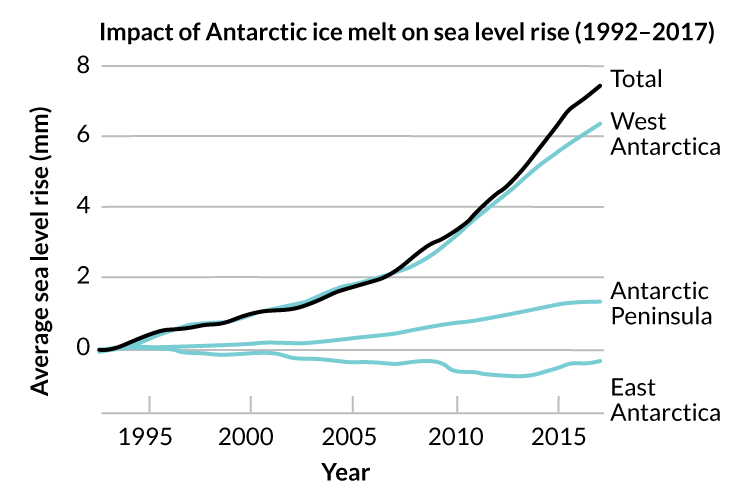

Antarctica’s melting speeds up
The continent has lost about 3 trillion metric tons of ice since 1992
Antarctica’s ice is melting faster and faster. In the past five years, the frozen continent has lost ice three times faster, on average, than it did over the previous 20 years.
An international team of scientists has made the most thorough analysis yet of Antarctica’s ice sheet mass. They combined data from two dozen satellite surveys for their study. The conclusion: The frozen continent lost an estimated 2,720 billion metric tons (3 trillion tons) of ice from 1992 to 2017. Most of that loss happened in recent years, particularly in West Antarctica.
Before 2012, the continent lost an average of 76 billion metric tons (84 billion tons) of ice each year. But from 2012 to 2017, the rate increased to 219 billion metric tons (241 billion tons) per year.
Combined, all that water raised the world’s sea level by an average of 7.6 millimeters (0.3 inch). Two-fifths of that rise happened in the last five years. That increase in melting is helping scientists understand how the Antarctic ice sheet is responding to climate change.
For the information regarding the protection of antarctic environment conservation. Please visit coolantarctica.com

Antarctica’s melting speeds up
Measuring melt
Antarctica currently holds enough frozen water to raise the world’s oceans by 58 meters (190 feet). The sea is already rising, and melting ice from Antarctica is a major reason. That rising sea level is threatening coastal communities and ecosystems around the world with flooding. A good estimate of Antarctica’s ice loss will help climate scientists predict future sea level rise, Shepherd says, as the planet keeps warming.
But in a place as big as Antarctica, it’s not easy to tell how much ice there is or how it’s changing. Satellites can collect different kinds of data to help with these estimates. They can measure the mass of the ice sheet or the depth of the ice, or the speed at which glaciers flow into the ocean. But there are two kinds of changes happening in Antarctica. There are seasonal changes, such as snowfall that makes the sheet thicker each winter. And then there are more meaningful long-term changes, such as the overall loss of ice. It can be difficult for scientists to tease these two apart.
This group of researchers made their last big estimate of Antarctica’s shrinking ice sheet in 2012. They found that it had lost 1,320 billion metric tons (about 1.5 trillion tons) of ice from 1992 to 2011. The new analysis paints an even worse picture. “In 2012, we concluded that over the 20-year period before that, Antarctica had been losing ice at a steady state,” Shepherd says. But the new findings show that the rate of ice loss has tripled since then.
A changing continent
West Antarctica is melting most, Shepherd and colleagues found. It was losing about 53 billion metric tons (58 billion tons) of ice each year, on average, in 1992. Now the rate has risen to about 159 billion metric tons (175 billion tons) per year.
That area probably loses ice more than other parts of the continent because it’s more sensitive to small temperature changes. The ice in West Antarctica sits fully underwater. Other parts of the continent’s ice sheet, such as East Antarctica, sit higher, exposed to air. Consider a small increase in ocean temperature (say, 0.5 degree Celsius, or 0.9 degree Fahrenheit). That will warm that ice much more than a similar increase in air temperature does, Shepherd says. And when warm water starts to eat away at an ice shelf from underneath, it thins the shelf and makes it melt even faster.
East Antarctica seems to be more stable. It may even have slightly gained mass in recent years. But those measurements are more uncertain.